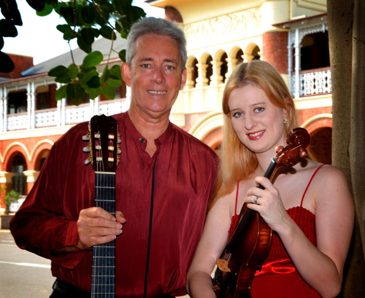
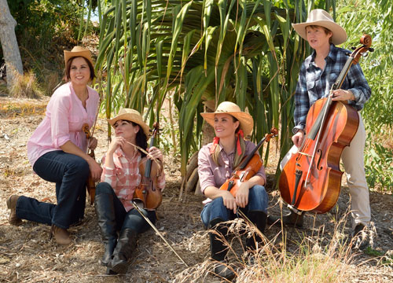
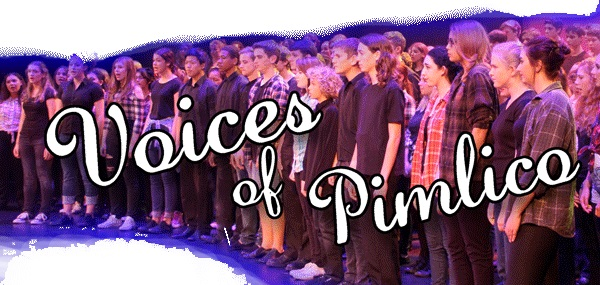
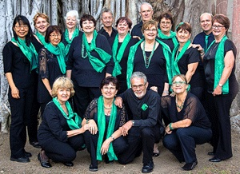
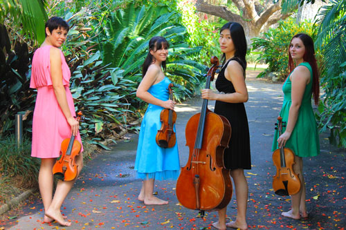

Notices
Posted 24-Mar-15
Posted 21-March-15
Posted 17-Mar-15
SUNDAY VARIETY CONCERT
Presented by Friends of the Theatre
2pm Sunday 26 April at Pimlico Performing Arts Centre
Fulham Road
Enquiries - please phone 4723 7879

Harbourside Duo
presents
Dream Serenade.
Music of Debussy, Ravel, Saint- Saens, Sibelius and others.
March into Sommarhagen!
Dance the Habanera
with the Girl with Flaxen Hair!
Be seduced by Thais!
Or just relax and let the music wash over you.
2pm Sunday 17 May at C2 (Townsville Civic Theatre)

Aviva String Quartet
Following the phenomenal success of their 2014 season, the superb foursome return with their first concert for 2015, bringing their signature style of classical and modern music to the masses in their own fresh and entertaining style.
featuring
Caroline Lloyd-Doolan on violin
Susan Fraser on violin
Jessica Winton on viola
Ivy Wu on cello
Ticketshop link 2pm Sunday 14 June at C2 (CivicTheatre building)
$25 Adult - $20 Concession - Children 12 and under free!

Townsville Concert Band
2pm Sunday 28 June at C2 (Townsville Civic Theatre)

Pimlico choir
Voices of Pimlico
2pm Sunday 6 September at C2 (Townsville Civic Theatre)
Townsville Concert Band
2pm Sunday 27 September June at C2 (Townsville Civic Theatre)

Allegro Choir
2pm Sunday 22 November at C2 (Townsville Civic Theatre)

Aviva String Quartet
The superb foursome return with their final concert for 2015, bringing their signature style of classical and modern music to the masses in their own fresh and entertaining style.
featuring
Caroline Lloyd-Doolan on violin
Susan Fraser on violin
Jessica Winton on viola
Ivy Wu on cello
2pm Sunday 29 November at C2 (Townsville Civic Theatre)